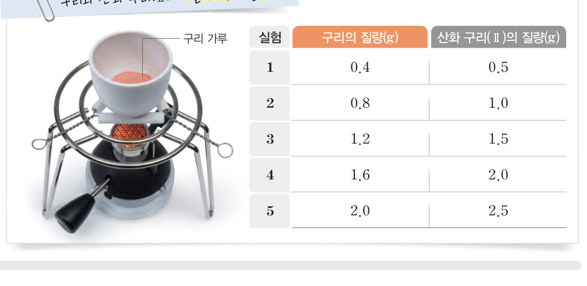
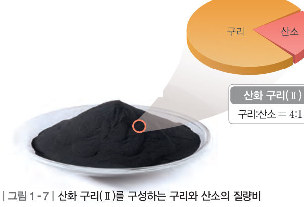
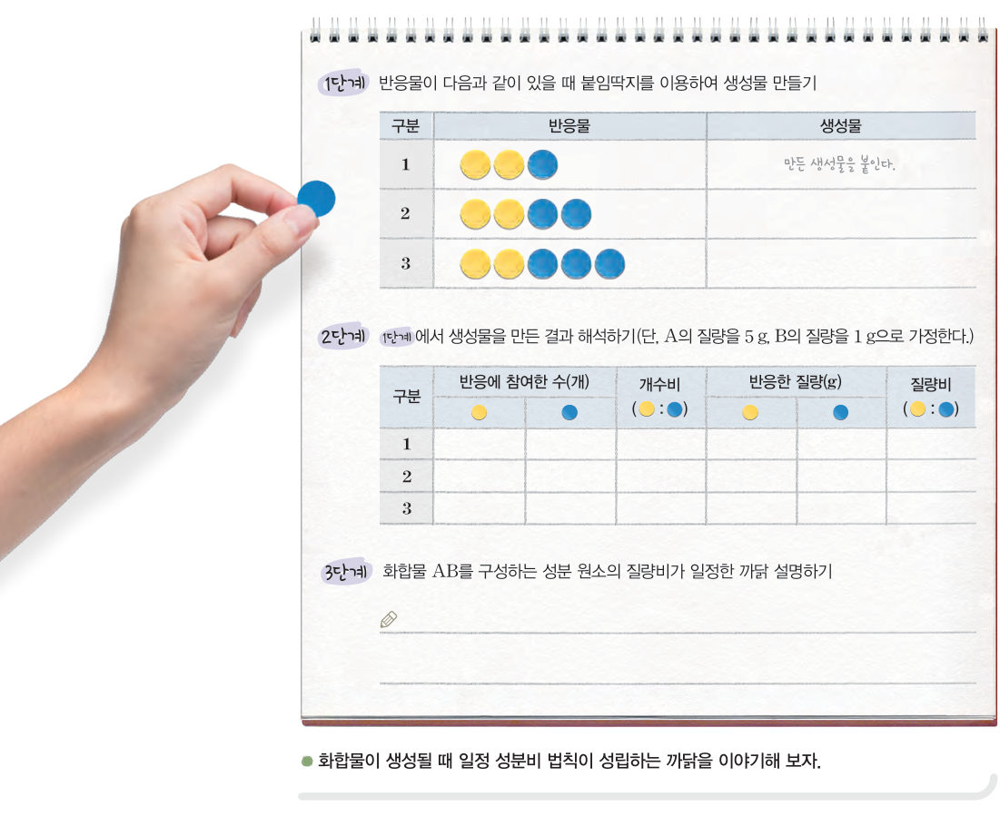
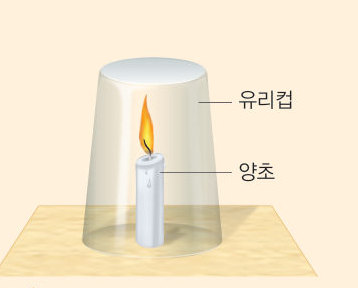

살아있는 교과서 · Ⅰ. 화학 반응의 규칙과 에너지 변화 · 2. 화학 반응의 규칙 · 02 30~33쪽
일정한 질량비로 결합하는 원소
안경테 한 개에 안경알은 꼭 두 개! 화합물도 성분 원소가 일정한 비율로 결합할까? 구리 가루를 가상으로 가열해 그래프를 그리고, 붙임딱지 모형으로 일정 성분비 법칙이 성립하는 까닭을 논증해 보자.
🎯 이 단원을 배우면 — 화합물을 구성하는 성분 원소 사이에는 일정한 질량비가 성립함을 설명하고, 일정 성분비 법칙을 모형을 이용하여 설명할 수 있다.
탐구 · 자료 분석 및 해석화합물을 구성하는 성분 원소 사이의 질량 관계 30~31쪽
30쪽안경테 한 개에 안경알 두 개가 있어야 해. 새로운 화합물이 생성될 때에도 성분 원소가 일정한 비율로 결합할까?
두 가지 이상의 원소가 결합하여 생성된 물질을 화합물이라고 한다. 다음 탐구로 화합물을 구성하는 성분 원소의 질량 사이에는 어떤 관계가 있는지 알아보자.

30쪽구리 가루의 질량을 달리하여 가열하였을 때 구리와 산화 구리(Ⅱ)의 질량 측정 결과
가상 실험구리 가루를 가열해 보자
구리 가루의 질량을 정하고 가열하면 실험 결과가 그래프에 찍혀요. 5 번의 실험을 모두 해 보세요.
1자료 분석 실험 1~5에서 구리와 반응한 산소의 질량을 구해 보자. (산소의 질량 = 산화 구리(Ⅱ)의 질량 − 구리의 질량)
실험
1
2
3
4
5
구리(g)
0.4
0.8
1.2
1.6
2.0
산화 구리(Ⅱ)(g)
0.5
1.0
1.5
2.0
2.5
산소(g)
2정리하기 구리의 질량이 커질수록 반응하는 산소의 질량도 . 산화 구리(Ⅱ)를 구성하는 구리 : 산소 = 이다.
3탐구의 결과로 알 수 있는 사실을 '화합물, 성분 원소, 질량비'를 사용하여 설명해 보자.
평가 기준
스스로 평가
탐구 기능 분석한 자료를 그래프로 옳게 변환하여 해석하였는가?
탐구 기능 화합물을 구성하는 성분 원소 사이의 질량 관계를 옳게 설명하였는가?
인성 탐구 활동에 적극적으로 참여하였는가?
교과서일정 성분비 법칙 31쪽
구리를 가열하면 구리가 공기 중의 산소와 반응하여 산화 구리(Ⅱ)가 생성된다. 이때 가열하는 구리의 질량이 커질수록 반응하는 산소의 질량도 비례하여 커지며, 구리와 산소는 항상 일정한 질량비로 반응하여 산화 구리(Ⅱ)를 생성한다. 즉, 그림 1-7과 같이 산화 구리(Ⅱ)를 구성하는 구리와 산소의 질량비는 항상 4:1로 일정하다. 이와 같이 화합물을 구성하는 성분 원소 사이에는 일정한 질량비가 성립하는데, 이를 일정 성분비 법칙이라고 한다.

그림 1-7산화 구리(Ⅱ)를 구성하는 구리와 산소의 질량비 — 구리 : 산소 = 4 : 1
해 보기 · 논증일정 성분비 법칙을 모형으로 설명하기 32쪽

32쪽물질 A와 물질 B가 반응하여 화합물 AB가 생성되는 반응을 붙임딱지로 나타내기
붙임딱지 모형A와 B를 넣으면 AB가 몇 개 생길까? (A 1 개 5 g, B 1 개 1 g)
12단계 A와 B는 항상 의 개수비로 결합하고, 반응한 A와 B의 질량비는 항상 이다. A나 B의 개수를 바꿔도 이 질량비는 .
23단계 화합물 AB를 구성하는 성분 원소의 질량비가 일정한 까닭을 설명해 보자.
교과서일정 성분비 법칙이 성립하는 까닭은 무엇일까? 33쪽
화합물이 생성될 때 어느 한 물질이 모두 반응하여 없어지면 다른 물질이 남아 있더라도 반응이 일어나지 않는다. 이는 그림 1-8과 같이 물질을 구성하는 원자가 항상 일정한 개수비로 결합하여 화합물을 생성하기 때문이다. 이때 원자는 각각 일정한 질량이 있으므로 화합물을 구성하는 성분 원소 사이에는 항상 일정한 질량비가 성립한다.
그림 1-8산화 구리(Ⅱ)와 물에서의 일정 성분비 법칙 — 물: 수소 원자 2 : 산소 원자 1, 질량비 1 : 8 / 산화 구리(Ⅱ): 구리 이온 1 : 산화 이온 1, 질량비 4 : 1
오개념 바로잡기 — 혼합물도 일정 성분비 법칙이 성립할까? 혼합물은 성분 물질이 섞이는 비율이 일정하지 않으므로 일정 성분비 법칙이 성립하지 않는다.
1과산화 수소(H₂O₂)는 수소 원자 2 개와 산소 원자 2 개로 이루어진다. 수소 원자와 산소 원자의 질량비가 1 : 16이므로 과산화 수소를 구성하는 수소 : 산소의 질량비는 이다.
🧩 두 번째 열쇠 (33쪽)
수증기를 구성하는 수소와 산소의 질량비는 1 : 8이다. 따라서 수소가 연소하는 데 필요한 산소의 질량은 수소 질량의 ( ) 배이다.
스스로 확인하기30쪽 학습 목표를 달성했는지 확인해 보자 33쪽
1화합물을 구성하는 성분 원소 사이에는 일정한 질량비가 성립하는데, 이를 법칙이라고 한다.
2화합물이 생성될 때 원자가 항상 일정한 로 결합하므로 일정 성분비 법칙이 성립한다.

33쪽불을 붙인 양초에 유리컵을 씌운다.
3과학적 사고력 불을 붙인 양초에 유리컵을 씌웠더니 잠시 후 불이 꺼졌다. 양초의 불이 꺼진 까닭을 일정 성분비 법칙과 관련지어 설명해 보자.
개념 확인일정한 질량비로 결합하는 원소
1화합물을 구성하는 성분 원소 사이에는 일정한 질량비가 성립하는데, 이를 법칙이라고 한다.
✔옳으면 O, 옳지 않으면 X
⑴ 혼합물과 화합물에서 일정 성분비 법칙이 항상 성립한다.
⑵ 같은 종류의 화합물은 성분 원소의 질량비가 항상 일정하다.
⑶ 구리와 산소가 반응하여 산화 구리(Ⅱ)가 생성될 때 일정 성분비 법칙이 성립한다.
⑷ 화합물에서 일정 성분비 법칙이 성립하는 까닭은 원자가 일정한 개수비로 결합하기 때문이다.
3일정 성분비 법칙이 성립하는 반응을 모두 고르시오.
4구리 가루 2.0 g을 모두 가열하였더니 산화 구리(Ⅱ) 2.5 g이 생성되었다. ⑴ 구리 가루 2.0 g과 반응한 산소의 질량은 g이다. ⑵ 구리 : 산소의 질량비는 이다. ⑶ 구리 가루 4.0 g을 모두 반응시킬 때 필요한 산소의 질량은 g이다.
5수소 기체 10 g과 산소 기체 40 g이 반응하였더니 물 45 g이 생성되고 수소 기체 5 g이 남았다. 반응하는 수소 : 산소의 질량비는 이다.
6마그네슘 1.2 g을 가열하였더니 산화 마그네슘 2.0 g이 생성되었다. 마그네슘 15 g과 산소 15 g을 반응시킬 때 반응하지 않고 남는 물질은 이고, 그 질량은 g이다.
7볼트(B)와 너트(N)로 화합물 BN₂를 만든다(볼트 1 개 3 g, 너트 1 개 2 g). ⑴ 화합물을 구성하는 볼트 : 너트의 질량비는 이다. ⑵ 볼트 15 개와 너트 20 개로 최대로 만들 수 있는 화합물은 개이다.
스스로 정리하기일정한 질량비로 결합하는 원소
2일정 성분비 법칙
⑴ 일정 성분비 법칙: 화합물을 구성하는 성분 원소 사이에는 일정한 가 성립한다. — 예) 산화 구리(Ⅱ) 구리 : 산소 = , 물 수소 : 산소 = ⑵ 성립하는 까닭: 화합물이 생성될 때 원자가 항상 일정한 로 결합하기 때문이다. ⑶ 혼합물은 성분 물질이 섞이는 비율이 일정하지 않으므로 일정 성분비 법칙이 .
평가 기준
스스로 평가
화합물을 구성하는 성분 원소 사이에는 일정한 질량비가 성립함을 설명할 수 있다.
일정 성분비 법칙을 모형을 이용하여 설명할 수 있다.
제출학생 정보 · 제출하기
모든 활동을 마친 뒤 제출하면 전체가 한 번에 채점되고 피드백이 나타나요. 답안은 선생님 스프레드시트(중3 탭)에 기록돼요.